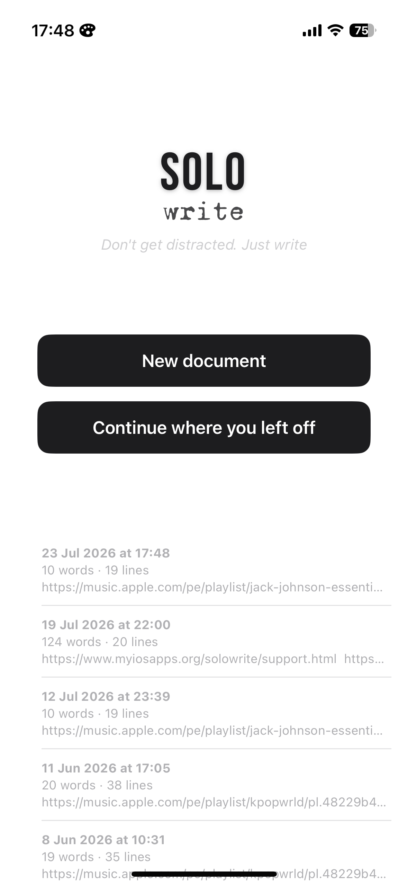
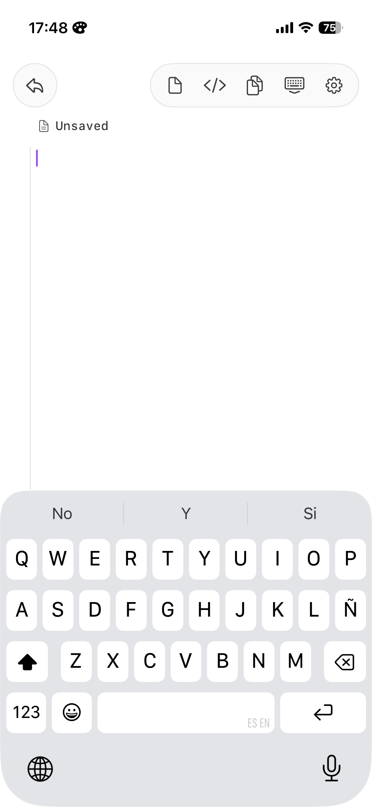
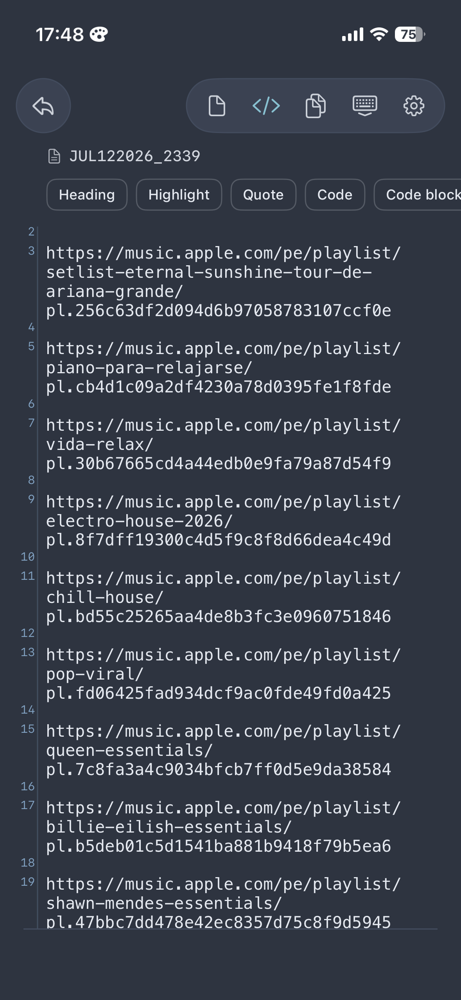
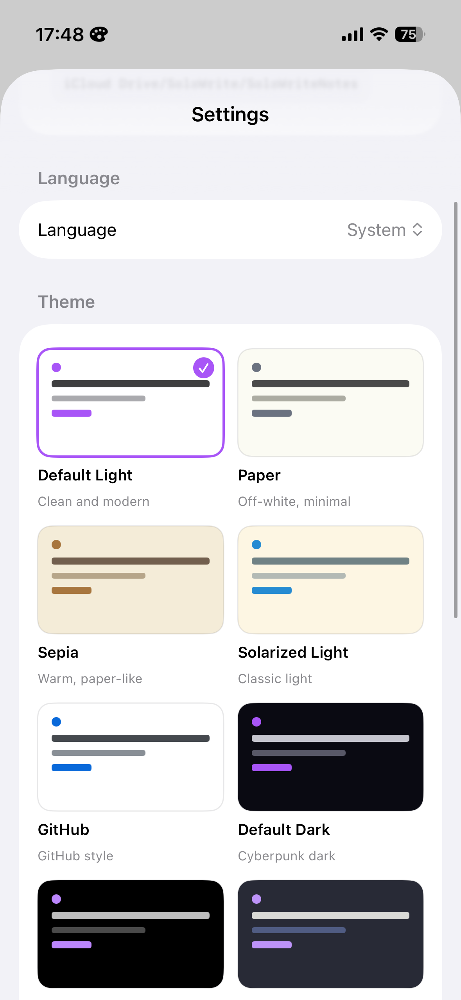

Don't get distracted. Just write.

A single, focused editor that renders Markdown as you type — and stays out of your way.
Headings, bold, quotes, code blocks, lists and highlights render right in the editor as you type. One mode. No preview switching.
A GitHub-style gutter keeps you oriented, and the </> bar inserts headings, quotes, code and more with one tap.
From Paper and Sepia to Dracula, Nord and Tokyo Night. The theme dresses the whole app, not just the editor.
Notes are plain Markdown files stored in your own iCloud Drive. Open them with any app, today or in twenty years.
No accounts, no analytics, no servers. SoloWrite collects nothing — your words never leave your devices and your iCloud.
A native Mac companion picks up right where your iPhone left off. Both apps speak English and Spanish.
Open the app, tap once, write. That's the whole workflow.



The native macOS companion shares the same notes through iCloud, renders Markdown live with line numbers, and can even become your default app for .md files in Finder.